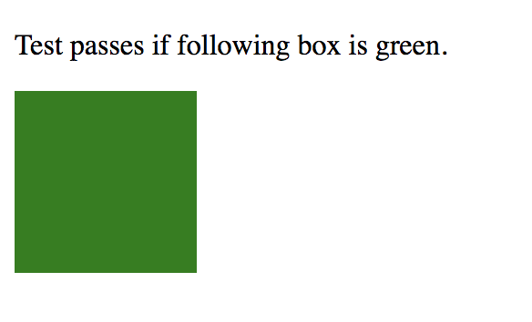
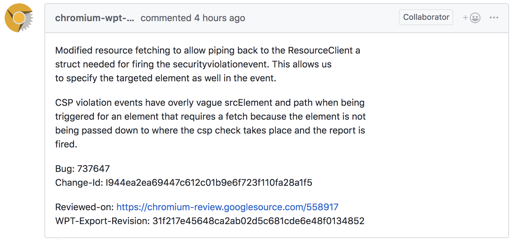
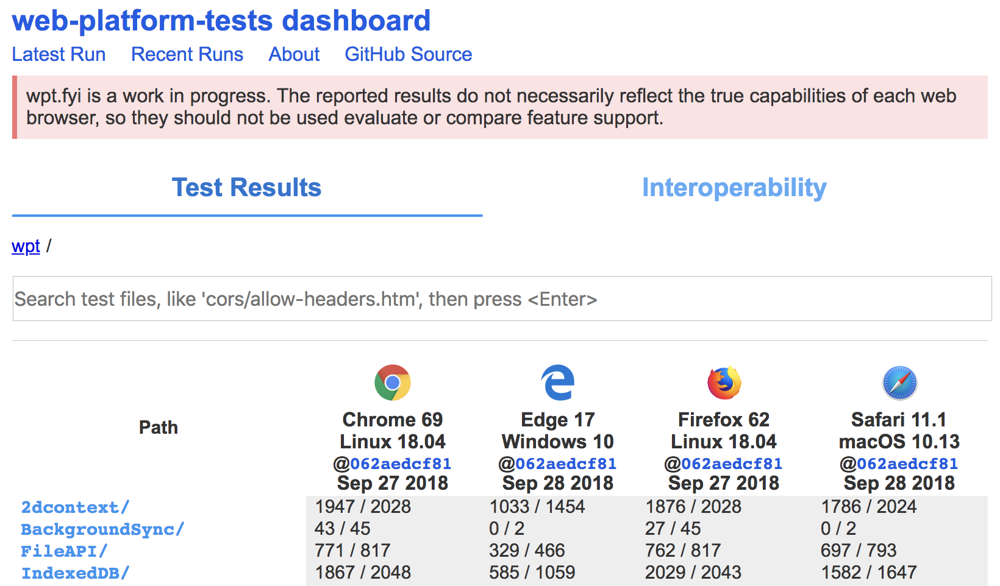
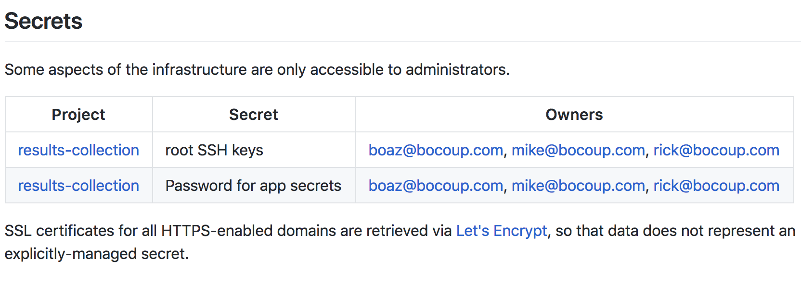
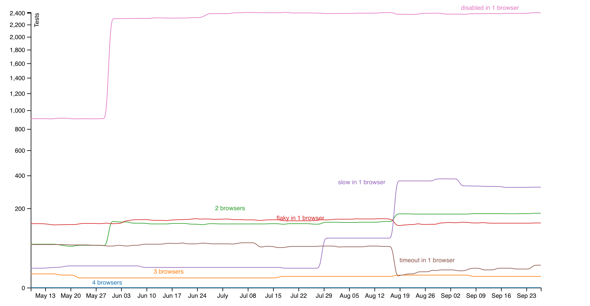
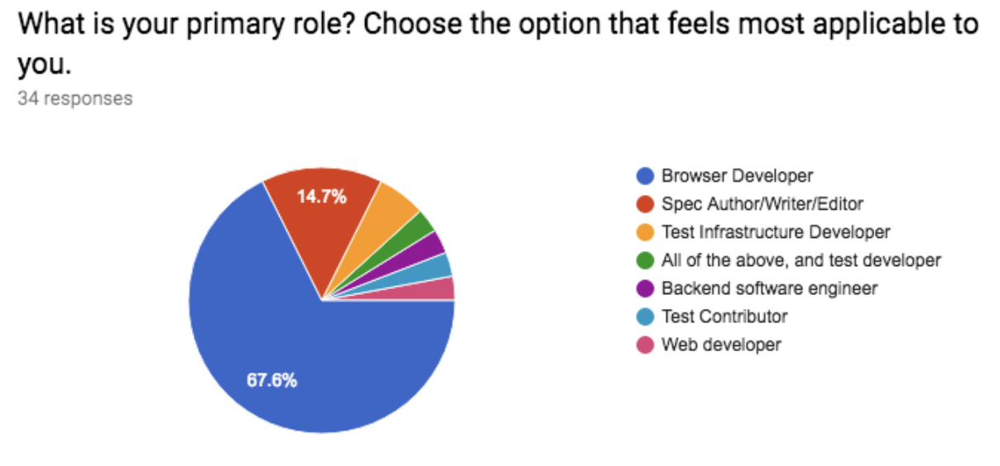

class: first
# web-platform-tests Introduction
Simon Pieters
<a href=https://bocoup.com/><img srcset="https://static.bocoup.com/assets/img/bocoup-logo@2x.png 2x" src="https://static.bocoup.com/assets/img/bocoup-logo@2x.png" alt=Bocoup></a>
---
# Documentation
* [README.md](https://github.com/web-platform-tests/wpt/blob/master/README.md)
* http://web-platform-tests.org
---
# Local environment
* Clone the repo
* Set up hosts file
* Install `virtualenv` (missing from docs)
- https://github.com/web-platform-tests/wpt/issues/6565
* Run tests
---
# Running tests
* `wpt serve` + load manually
* `wpt run`
* browser-specific integration
* Node.js
---
# Running HTTPS tests
* Just use `wpt run`
---
# Writing tests
* testharness.js
* reftests
* visual tests
* wdspec tests
* testdriver.js
* manual tests
---
# Single page tests
```html
<!doctype html>
<title>something</title>
<script src="https://zcorpan.github.io/resources/testharness.js"></script>
<script src="https://zcorpan.github.io/resources/testharnessreport.js"></script>
<script>
// Maybe in the future:
// single_test();
assert_equals(document.title, "something");
done();
</script>
```
---
# Sync tests
```html
<!doctype html>
<title>something</title>
<script src="https://zcorpan.github.io/resources/testharness.js"></script>
<script src="https://zcorpan.github.io/resources/testharnessreport.js"></script>
<script>
test(() => {
assert_equals(document.title, "something");
}, "Test something");
</script>
```
---
# Async tests
```html
<!doctype html>
<title>something</title>
<script src="https://zcorpan.github.io/resources/testharness.js"></script>
<script src="https://zcorpan.github.io/resources/testharnessreport.js"></script>
<script>
async_test(t => {
window.onmessage = t.step_func_done(e => {
assert_equals(e.data, "foo");
});
window.postMessage("foo", "*");
}, "Test something");
</script>
```
---
# Promise tests
```html
<!doctype html>
<title>something</title>
<script src="https://zcorpan.github.io/resources/testharness.js"></script>
<script src="https://zcorpan.github.io/resources/testharnessreport.js"></script>
<script>
promise_test(async t => {
const res = await fetch("data:,foo");
const text = await res.text();
assert_equals(text, "foo");
}, "Test something");
</script>
```
---
# Mixing callbacks and promises
```js
// Maybe in the future:
// single_test();
(async () => {
const res = await fetch("data:,foo");
const text = await res.text();
assert_equals(text, "foo");
window.onmessage = e => {
assert_equals(e.data, "foo");
done();
};
window.postMessage("foo", "*");
})();
```
---
# Multi-global tests
* `something.any.js`
* `other.window.js`
* `thing.worker.js`
```js
// META: global=window,worker
test(() => {
if (GLOBAL.isWindow() {
...
} else {
...
}
}, 'something');
```
---
# Reftests
```html
<link rel="match" href="https://zcorpan.github.io/wpt-intro/not-apply-in-shadow-root-001-ref.html">
...
<p>Test passes if following box is green.</p>
...
```

---
# wptserve
* HTTP headers
* Substitution
* Pipes
* Stash
* .asis
* Python handlers
* WebSocket
* HTTP/2.0
---
# Substitution
* `something.sub.js`
```js
const testId = "{{GET[id]}}";
const otherOrigin = "http://{{domains[www1]}}:{{ports[http][0]}}";
```
---
# Linting
* `wpt lint`
* css/ has extra requirements
---
# Review on GitHub
* https://github.com/web-platform-tests/wpt#test-review
* https://web-platform-tests.org/reviewing-tests/
---
# Two-way sync
* Chromium
* Gecko
* Semi-automated for WebKit

---
# Results collection
* https://github.com/web-platform-tests/results-collection
> This project defines a procedure to provision and deploy systems for running [the web-platform-tests](https://github.com/web-platform-tests/wpt) in a number of configurations. It currently provides data to power [wpt.fyi](https://wpt.fyi/), a dashboard for reviewing current and historic test results.
---
# wpt.fyi
* https://wpt.fyi

---
# Live tests
* http://w3c-test.org
* http://web-platform-tests.live
---
# Project administration
* https://github.com/web-platform-tests/wpt/pull/10832

---
# Flaky tests
* https://bocoup.github.io/wpt-disabled-tests-report/

---
# WPT Survey
* [WPT Survey Report](https://docs.google.com/document/d/1b3suZ9TAZ2Y0nn5X6_bgEoIAYG5j2v_ap473ZF1SeaU/edit#)

---
# Happy hacking
<!-- https://www.flickr.com/photos/aurelijus/2470740681 -->